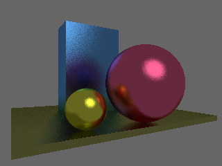
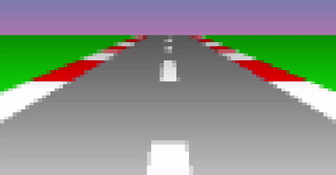

TinyCompiler: a compiler in a week-end
Introduction

Have you ever wondered how a compiler works, but you never found courage to find out? Then this series of articles is for you. I have never had the chance to look under the hood either, but one week-end I have decided to to write a translator from the esoteric programming language wend (short for week-end), which I just invented myself, into regular GNU assembly. The goal is to keep the code as tiny as possible, 500-ish lines of python sounds great. The main repository lives on github (don't forget to check out other tiny* repositories in my profile).
Spoiler alert: I am currently working on a tinyoptimizer, a minimalist optimizing compiler.
So behold, here is a program that uses virtually all concepts in wend:
Fixed-point square root
Since I am interested in a compiler, the language being implemented is of no importance. I am not trying to invent yet another C++ killer, that is not the point. Wend is a simple language similar to C or Java, but with far less features. Wend is strongly typed, with no pointers, arrays, closures, dynamic memory allocation, garbage collector or parallel computations. It supports nested functions and function overloading, a bare minimum for the first dive into compiler theory.
By the way, I have spent a lot more time on writing test programs than on the compiler itself :)
Graphics!
It is so dull to compute Fibonacci numbers, so here are more eyecandy examples for the compiler, check test-programs/gfx/*.wend files.
Mandelbrot set

Ray tracer

Zero-player breakout game

Fire

Sunset race
